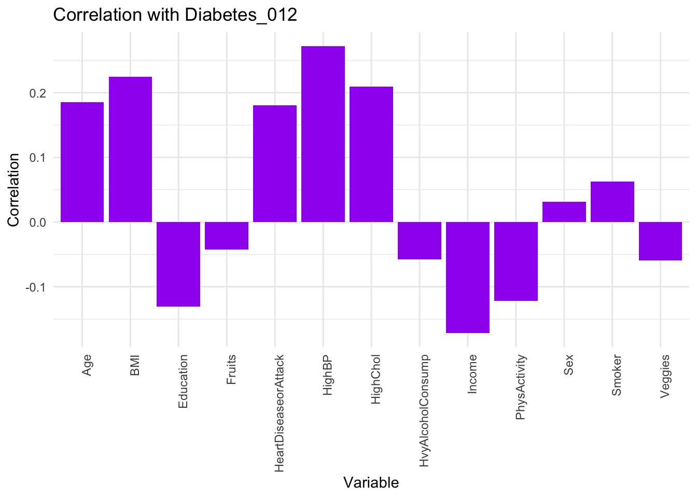

To investigate the relationship between the variables High Blood Pressure, High Cholesterol Level, BMI, Sex, Fruits Consumption, Veggies Consumption, Smoking, Income Level, Physical Acitivity, and diabetes status, we conducted correlation and ANOVA statistical tests and build a predictive model.
correlationX <-
diabetes_data01 |>
dplyr::select(-starts_with("Diabetes_012"))
correlations <- cor(correlationX,diabetes_data01$Diabetes_012)
cor_df <- data.frame(Variable = names(correlationX), Correlation = correlations)
ggplot(cor_df, aes(x = Variable, y = Correlation)) +
geom_bar(stat = "identity", fill = "purple") +
theme_minimal() +
labs(title = "Correlation with Diabetes_012", x = "Variable", y = "Correlation") +
theme(axis.text.x = element_text(angle = 90, hjust = 1))
High Blood Pressure, High Cholesterol, and BMI show a positive correlation, indicating that an increase in these factors is associated with higher diabetes metrics.
Physical Activity and increased Income exhibit a slight negative correlation, suggesting they may contribute to lower diabetes measures.
Fruits, sex, smoker and vegetable intake also show varying degrees of correlation, reflecting the complex interplay between socioeconomic factors, dietary habits, and health outcomes.
dependent_var <- diabetes_data01[[1]]
independent_vars <- diabetes_data01[,-1]
independent_vars <- data.frame(lapply(independent_vars, function(x) as.factor(x)))
lm_model <- lm(dependent_var ~ ., data = independent_vars)
# Perform ANOVA
anova_results <- anova(lm_model)
# Display the ANOVA results
anova_results|>
knitr::kable()| Df | Sum Sq | Mean Sq | F value | Pr(>F) | |
|---|---|---|---|---|---|
| HighBP | 1 | 2.199883e+03 | 2199.8830505 | 20942.026244 | 0.0000000 |
| HighChol | 1 | 5.238318e+02 | 523.8317866 | 4986.673733 | 0.0000000 |
| BMI | 82 | 1.029166e+03 | 12.5508076 | 119.478780 | 0.0000000 |
| Smoker | 1 | 2.574777e+01 | 25.7477697 | 245.108698 | 0.0000000 |
| Income | 7 | 3.261327e+02 | 46.5903885 | 443.522276 | 0.0000000 |
| Sex | 1 | 2.186560e+01 | 21.8656010 | 208.151970 | 0.0000000 |
| PhysActivity | 1 | 4.885871e+01 | 48.8587128 | 465.115837 | 0.0000000 |
| Fruits | 1 | 3.500968e-01 | 0.3500968 | 3.332785 | 0.0679130 |
| Veggies | 1 | 2.228080e+00 | 2.2280802 | 21.210452 | 0.0000041 |
| Residuals | 248952 | 2.615149e+04 | 0.1050463 | NA | NA |
We can see that variables except Fruits have significant small p-values, while Fruits also have a p value around to 0.05 (0.067).
chi_square_results <- data.frame(Variable = character(), ChiSquare = numeric(), PValue = numeric(), stringsAsFactors = FALSE)
# Perform chi-square test for each independent variable
for (var in names(independent_vars)) {
# Create a contingency table
table <- table(dependent_var, independent_vars[[var]])
# Perform chi-square test
test <- chisq.test(table)
# Store the results
chi_square_results <- rbind(chi_square_results, data.frame(Variable = var, ChiSquare = test$statistic, PValue = test$p.value))
}## Warning in chisq.test(table): Chi-squared approximation may be incorrect# Order results by p-value
chi_square_results <- chi_square_results %>%
arrange(PValue)
# Print the results
chi_square_results|>
knitr::kable()| Variable | ChiSquare | PValue | |
|---|---|---|---|
| X-squared | HighBP | 18062.6213 | 0 |
| X-squared1 | HighChol | 10535.0369 | 0 |
| X-squared2 | BMI | 15209.2925 | 0 |
| X-squared4 | Income | 7267.2494 | 0 |
| X-squared6 | PhysActivity | 3647.1812 | 0 |
| X-squared3 | Smoker | 963.5432 | 0 |
| X-squared8 | Veggies | 840.5152 | 0 |
| X-squared7 | Fruits | 433.5626 | 0 |
| X-squared5 | Sex | 250.5281 | 0 |
We can see that all variables have significant p-values around to 0.